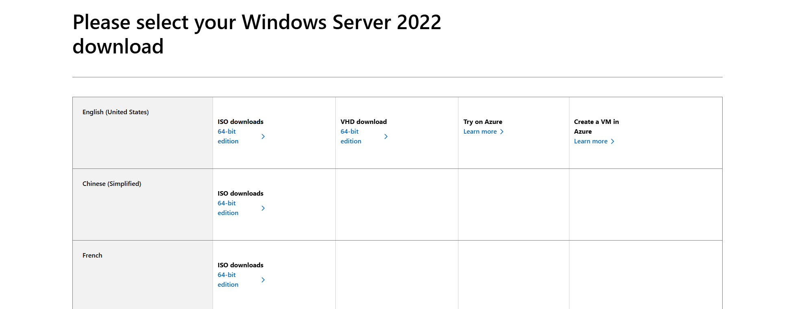

Part One: creating an active directory server
In this guide, I will show you the first steps to setting up your active directory using windows server 2022.

In this guide, I will show you the first steps to setting up your active directory using windows server 2022.
